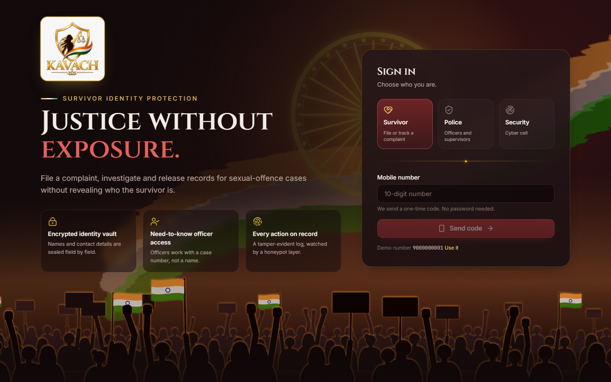
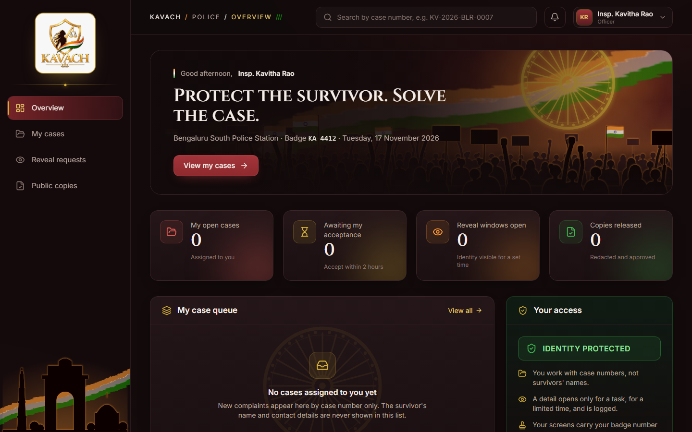
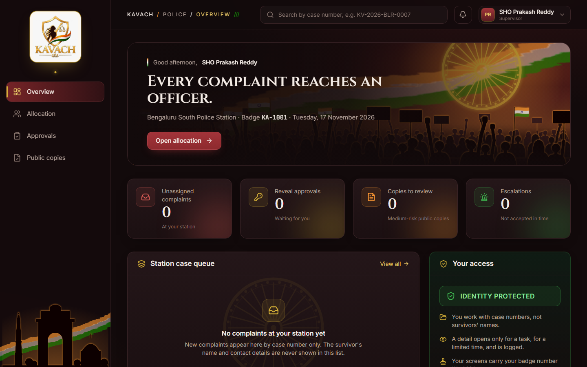
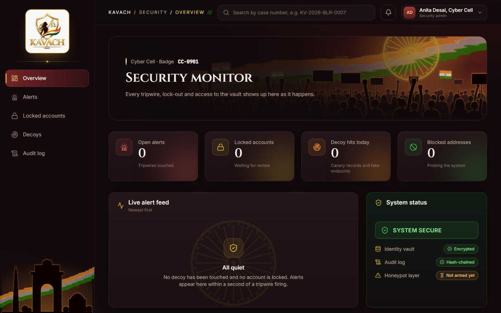
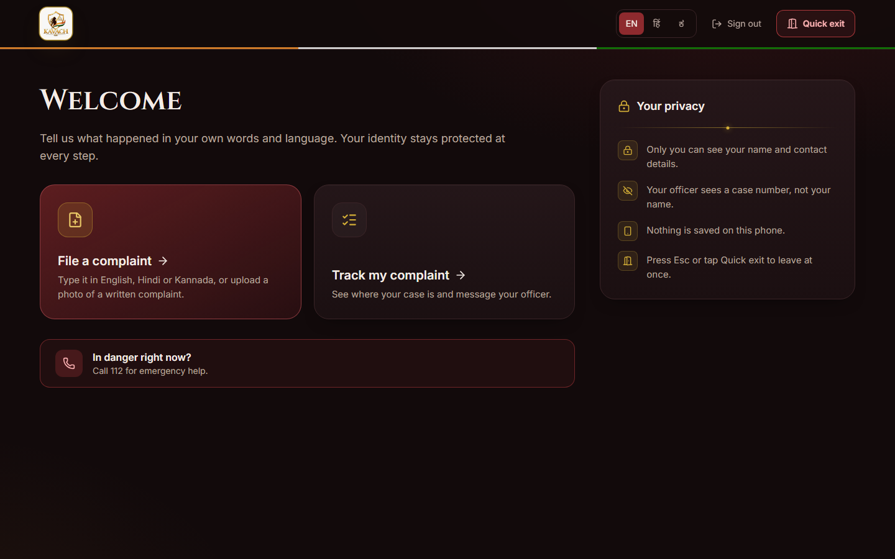
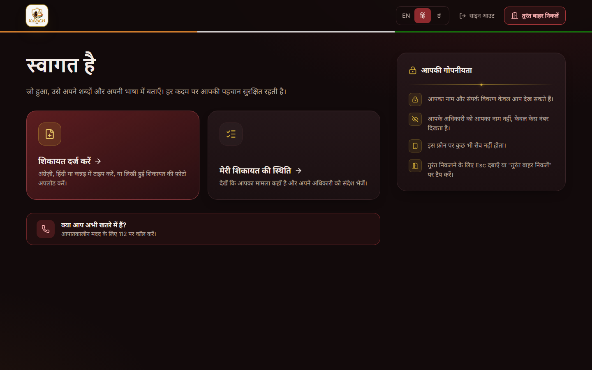
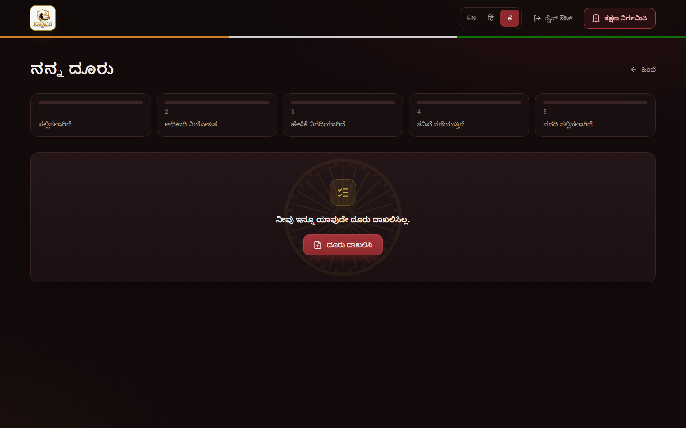
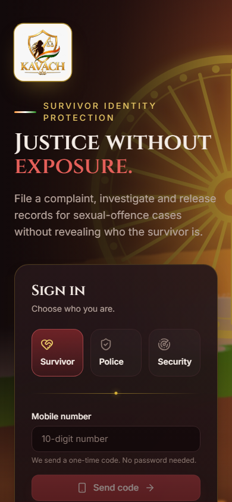
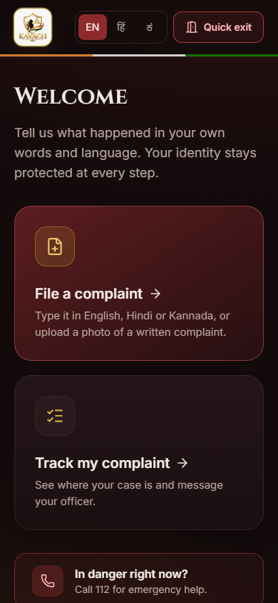
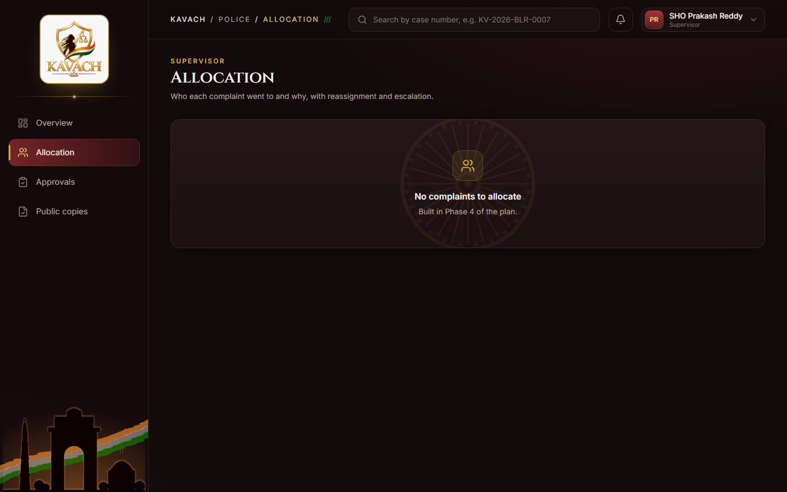

Every screen from the plan now exists in the Kavach style: deep maroon and gold, the tricolour, a crowd of silhouettes with raised fists, placards and flags, a gold Ashoka Chakra and an India Gate skyline. Staff screens use the full width of the screen. The survivor portal stays plain, with quick exit and Hindi and Kannada.
Sign-in screen

Police portal


Security portal

Survivor portal






Design system
Colours
| Element | Choice |
|---|---|
| Display type | Cinzel, a classical serif close to the logo's wordmark, for big headings only. |
| Body type | Inter, with Noto Sans Devanagari and Noto Sans Kannada for Hindi and Kannada. Case numbers use JetBrains Mono. |
| Fonts | Bundled with the app. No page calls Google Fonts or any other outside server, so nobody outside learns who opened the survivor portal. |
| Logo | Used exactly as supplied, on an ivory tile with a thin gold edge. Checked byte for byte against your original file: identical. |
| Patterns | Tricolour lines and breadcrumb separators, gold hairline dividers with a centre dot, cards with a warm 1px border and soft glow, a faint chakra behind empty states. |
Artwork, all drawn in code
| Piece | Details |
|---|---|
| Crowd | Three rows of silhouettes (far, middle, near) with raised fists, blank placards and small tricolour flags, lit from behind by a saffron glow. The same crowd appears every time. |
| Tricolour wave | Three brush-stroke bands in saffron, white and green with rough painted edges. |
| Ashoka Chakra | A 24-spoke wheel drawn in gold lines with a soft glow; also used faintly behind empty lists. |
| Skyline | India Gate, a minaret and a domed hall with a tricolour sweep, at the foot of the staff sidebar. |
UX rules in place
| Rule | Status |
|---|---|
| Staff screens fill the full width: fixed sidebar, fluid 12-column content, 4 stat cards per row on wide screens, 2 on laptops, 1 on phones | Done |
| Sidebar becomes a slide-out menu on phones and tablets | Done |
| One maroon main action per screen; outline style for secondary actions | Done |
| Statuses pair colour, icon and text | Done |
| Empty states explain what will appear; toasts confirm sign-in and sign-out | Done |
| Confirmation dialog and countdown chip components ready for reveals and releases | Ready |
| Quick exit button always visible on survivor screens; Esc does the same; it ends the session, clears the tab and replaces history so Back does not return | Done |
| Neutral tab title ("Notes") on survivor screens; language choice is never saved on the device | Done |
| Emergency line 112 one tap away on the survivor home | Done |
| Gold focus ring for keyboard users; reduced motion respected | Done |
Checks run
| Check | Result | Status |
|---|---|---|
| Production build | Builds with no errors | Pass |
| Browser console after a fresh load | No errors | Pass |
| All four roles signed in through the real API and screenshotted at 1440 × 900 | Each lands on its own portal | Pass |
| Phone layout at 390 px (sign-in and survivor home) | Sign-in form visible without scrolling far; no sideways scroll | Pass |
| Hindi and Kannada text | Renders correctly with bundled fonts | Pass |
| Logo file compared with the original | Identical (same SHA-256) | Pass |
Fixed during the phase: the crowd on the sign-in screen was too dark, the sign-in form sat below the fold on phones, a badge number wrapped awkwardly and a long name wrapped in the top bar.
Not done yet
- Counts on the stat cards show 0 until cases exist (Phase 3 onwards).
- The complaint form, OCR and tracker (Phase 3); case lists, allocation and reveals (Phase 4); redaction (Phase 5); honeypot and audit viewer (Phase 6).
- Quick exit opens a weather search on Google; this needs internet to show.
Next: Phase 3, survivor portal
The guided complaint form in three steps, photo or scan upload with in-browser OCR in English, Hindi and Kannada, a side-by-side confirm, identity fields sealed in the vault, tokenised narrative, the "in danger now" flag and the live status tracker.